#Loading Libraries
library(tidyverse)
library(lubridate)
library(hms)
library(dplyr)
library(geosphere)
library(tibble)
library(FNN)
library(leaflet)
library(ggplot2)
library(s2)
library(sf)
library(readr)
library(gridExtra)
library(viridis)
library(data.table)
library(scales)
library(patchwork)Case study: How does a bike-share navigate speedy success?
Executive Summary
This analysis examines Cyclistic bike share usage patterns to understand the behavioral differences between casual riders and annual members, with the goal of developing strategies to convert casual users into profitable annual memberships.
Key Findings:
Members represent 63.5% of total rides but take shorter trips (11.9 minutes average vs. 19.6 minutes for casual users)
Casual users exhibit recreational usage patterns: higher weekend activity, longer summer rides, and concentration at tourist attractions
Members show commuter-focused behavior: weekday peaks during rush hours, consistent year-round usage, and stations near business districts
Geographic analysis reveals casual users frequent tourist destinations (Millennium Park, Museum Campus, Lake Shore) while members use stations in business areas (River North, West Loop)
Business Impact: The data clearly shows two distinct user segments with different needs and usage patterns, providing clear opportunities for targeted conversion strategies.
Environement Preparation
All required R packages have been installed and loaded in advance. Therefore, in the code chunks below, we directly proceed with the analysis without including repeated install.packages() or library() calls.
Data Collection
The dataset used in this analysis consists of bike share ride data collected from the Divvy bike-sharing system in Chicago, provided by Lyft and made publicly available through the Divvy Trip Data portal. The data covers a full year of bike trips, from April of the current year going back 12 months, with each month’s data stored in a separate CSV file. Each file contains thousands of individual ride records, including information such as ride duration, start and end time, station locations, and rider type. After downloading the 12 monthly CSV files, they were merged into a single dataset named all_trips, resulting in a combined total of 5,779,568 ride records. This unified dataset serves as the foundation for the subsequent data cleaning, exploration, and analysis tasks.
# Folder path
data_folder <- "C://Users//aymen//Desktop//case_studies//Case_study_1//Data_R//"
# List of all CSV files
csv_files <- list.files(path = data_folder, pattern = "*.csv", full.names = TRUE)
# Read and merge all CSVs as data.table
all_trips <- rbindlist(lapply(csv_files, function(x) fread(x, na.strings = c("", "NA"))))This dataset contains 13 variables detailing bike-sharing trips. Each row represents a single ride, including information such as ride ID, type of bike (rideable_type), start and end timestamps (started_at, ended_at), station details (names, IDs, and coordinates), and rider type (member_casual). It includes both members and casual users and offers rich temporal and spatial data for analysis.This dataset contains 13 variables detailing bike-sharing trips. Each row represents a single ride, including information such as ride ID, type of bike (rideable_type), start and end timestamps (started_at, ended_at), station details (names, IDs, and coordinates), and rider type (member_casual). It includes both members and casual users and offers rich temporal and spatial data for analysis.
#Look at the structure of the data frame
glimpse(all_trips)Rows: 5,779,568
Columns: 13
$ ride_id <chr> "743252713F32516B", "BE90D33D2240C614", "D47BBDDE7C…
$ rideable_type <chr> "classic_bike", "electric_bike", "classic_bike", "c…
$ started_at <dttm> 2024-04-22 19:08:21, 2024-04-11 06:19:24, 2024-04-…
$ ended_at <dttm> 2024-04-22 19:12:56, 2024-04-11 06:22:21, 2024-04-…
$ start_station_name <chr> "Aberdeen St & Jackson Blvd", "Aberdeen St & Jackso…
$ start_station_id <chr> "13157", "13157", "TA1307000107", "13157", "TA13070…
$ end_station_name <chr> "Desplaines St & Jackson Blvd", "Desplaines St & Ja…
$ end_station_id <chr> "15539", "15539", "13249", "15539", "TA1308000029",…
$ start_lat <dbl> 41.87773, 41.87772, 41.96167, 41.87773, 41.96161, 4…
$ start_lng <dbl> -87.65479, -87.65496, -87.65464, -87.65479, -87.654…
$ end_lat <dbl> 41.87812, 41.87812, 41.95606, 41.87812, 41.88683, 4…
$ end_lng <dbl> -87.64395, -87.64395, -87.66884, -87.64395, -87.622…
$ member_casual <chr> "member", "member", "member", "member", "member", "…summary(all_trips) ride_id rideable_type started_at
Length:5779568 Length:5779568 Min. :2024-04-01 00:00:42
Class :character Class :character 1st Qu.:2024-06-19 09:30:04
Mode :character Mode :character Median :2024-08-17 13:20:39
Mean :2024-08-25 19:23:44
3rd Qu.:2024-10-13 05:26:14
Max. :2025-03-31 23:50:16
ended_at start_station_name start_station_id
Min. :2024-04-01 00:07:30 Length:5779568 Length:5779568
1st Qu.:2024-06-19 09:47:55 Class :character Class :character
Median :2024-08-17 13:41:40 Mode :character Mode :character
Mean :2024-08-25 19:40:47
3rd Qu.:2024-10-13 05:44:47
Max. :2025-03-31 23:59:21
end_station_name end_station_id start_lat start_lng
Length:5779568 Length:5779568 Min. :41.64 Min. :-87.91
Class :character Class :character 1st Qu.:41.88 1st Qu.:-87.66
Mode :character Mode :character Median :41.90 Median :-87.64
Mean :41.90 Mean :-87.65
3rd Qu.:41.93 3rd Qu.:-87.63
Max. :42.07 Max. :-87.52
end_lat end_lng member_casual
Min. :16.06 Min. :-144.05 Length:5779568
1st Qu.:41.88 1st Qu.: -87.66 Class :character
Median :41.90 Median : -87.64 Mode :character
Mean :41.90 Mean : -87.65
3rd Qu.:41.93 3rd Qu.: -87.63
Max. :87.96 Max. : 152.53
NA's :6589 NA's :6589 Data cleaning (Invalid Stations Coordinates)
I noticed a number of incorrect coordinate values (end_lat & end_lng) in the dataset that fall outside the expected geographic bounds of Chicago.
# Define valid Chicago lat/lng bounds
lat_min <- 41.64
lat_max <- 42.07
lng_min <- -87.94
lng_max <- -87.52
# Extract invalid records
invalid_records <- all_trips[!is.na(end_lat) & !is.na(end_lng) &
((end_lat < lat_min) |
(end_lat > lat_max) |
(end_lng < lng_min) |
(end_lng > lng_max)
)]
# Count invalid records
num_invalid_records <- nrow(invalid_records)
cat("Number of incorrect records:", num_invalid_records, "\n")Number of incorrect records: 219 I found 219 incorrect coordinate values. I will keep these records but replace their end_lat and end_lng values with NA to preserve other valuable information. These cases likely represent bikes that were not returned properly.
# Replace incorrect coordinates with NA
all_trips[!is.na(end_lat) & !is.na(end_lng) &
((end_lat < lat_min) |
(end_lat > lat_max) |
(end_lng < lng_min) |
(end_lng > lng_max)), `:=`(end_lat = NA, end_lng = NA)]Data cleaning (Missing data)
A check for missing data has been performed across all columns.
# Count NAs per column
na_counts <- colSums(is.na(all_trips))
# Show only columns with at least one NA
na_counts[na_counts > 0]start_station_name start_station_id end_station_name end_station_id
1091230 1091230 1120919 1120919
end_lat end_lng
6808 6808 The 6,808 missing values in end_lat and end_lng cannot be filled, as both the station name and station ID are also missing for those records. Without any identifiable information, it is not possible to infer the corresponding coordinates for these trips.
The rest of the stations with missing names were found to have coordinates rounded to only two decimal places, which introduces a significant error margin of approximately 1.1 kilometers. Due to this level of imprecision, it is not possible to reliably identify the exact station name based on these coordinates.
# see the coordinates of the missing end stations
missing_stations <- all_trips[is.na(end_station_name)]
head(missing_stations$end_lat, 10) [1] 41.86 41.91 41.89 41.89 41.88 41.89 41.98 41.88 41.94 41.93head(missing_stations$end_lng, 10) [1] -87.66 -87.65 -87.61 -87.66 -87.63 -87.71 -87.69 -87.62 -87.67 -87.71# the same applies for start stationsAll records were retained despite the missing station information. It was observed that 18.88% of start station data and 19.39% of end station data were missing. In total, 29.06% of rides had either start or end station information missing, while 9.22% had both missing. Removing these records would have resulted in a substantial loss of data. By keeping them, the integrity of other key attributes—such as trip duration, time, and user-related details—was maintained, ensuring a more robust and comprehensive analysis.
total_records <- nrow(all_trips)
#count records with missing stations
missing_start = sum(is.na(all_trips$start_station_name))
missing_end = sum(is.na(all_trips$end_station_name))
missing_start_or_end = sum(is.na(all_trips$start_station_name) | is.na(all_trips$end_station_name))
missing_start_and_end = sum(is.na(all_trips$start_station_name) & is.na(all_trips$end_station_name))
cat("Number of missing start stations info:", missing_start,
"percentage:", (missing_start / total_records) * 100, "%\n")Number of missing start stations info: 1091230 percentage: 18.88082 %cat("Number of missing end stations info:", missing_end,
"percentage:", (missing_end / total_records) * 100, "%\n")Number of missing end stations info: 1120919 percentage: 19.39451 %cat("Number of rides with either start or end stations info missing:", missing_start_or_end,
"percentage:", (missing_start_or_end / total_records) * 100, "%\n")Number of rides with either start or end stations info missing: 1679432 percentage: 29.05809 %cat("Number of rides with both start and end stations info missing:", missing_start_and_end,
"percentage:", (missing_start_and_end / total_records) * 100, "%\n")Number of rides with both start and end stations info missing: 532717 percentage: 9.217246 %Rides with missing station names were flagged using two new columns: missing_start_stations_flag and missing_end_stations_flag.
all_trips[,`:=`(missing_start_stations_flag = if_else(is.na(start_station_name), 1, 0),
missing_end_stations_flag = if_else(is.na(end_station_name), 1, 0))]Data cleaning (Duplicate rides)
During the initial examination of the all_trips dataset, it was found that there were 211 duplicate ride IDs. Upon further inspection, each of these duplicated entries had identical values across all columns, indicating that they were likely the result of accidental double entries in the data source. To maintain data integrity while avoiding redundancy, the duplicates were removed by keeping only one instance of each duplicated record and discarding the others. This ensures that the dataset accurately reflects the true number of unique bike share rides.
#check for duplicate rides
nrow(all_trips[duplicated(ride_id)])[1] 211#remove duplicate rides by keeping only the first raw
all_trips <- all_trips[!duplicated(ride_id)]Data cleaning (Value consistency check)
The member_casual column contains exactly two user types: “member” and “casual”. This matches the dataset description perfectly, so there is no issue with the user type data.
unique(all_trips$member_casual)[1] "member" "casual"#convert to factors
all_trips$member_casual <- factor(all_trips$member_casual)The rideable_type column includes exactly three categories: “classic_bike”, “electric_bike”, and “electric_scooter”. This matches the expected values in the dataset documentation, so the rideable type data is consistent and has no problems.
unique(all_trips$rideable_type)[1] "classic_bike" "electric_bike" "electric_scooter"#convert to factors
all_trips$rideable_type <- factor(all_trips$rideable_type)The started_at and ended_at timestamps for all trips fall within the expected date range of April 2024 to March 2025. No issues were identified with the temporal coverage of the dataset.
# Define date range
start_date <- ymd_hms("2024-04-01 00:00:00")
end_date <- ymd_hms("2025-03-31 23:59:59")
# Filter wrong records
wrong_records <- all_trips[started_at < start_date |
started_at > end_date |
ended_at < start_date |
ended_at > end_date]
cat("The number of records out of the date range is \"",nrow(wrong_records), "\"")The number of records out of the date range is " 0 "In the all_trips dataset, some station IDs end with .0 due to numeric-to-character conversion. This code removes the .0 suffix to standardize formatting and ensure consistent string operations.
all_trips[, `:=`(start_station_id = gsub("\\.0$", "", start_station_id),
end_station_id = gsub("\\.0$", "", end_station_id)
)]In the dataset, each bike station is expected to be assigned a unique ID. However, 111 stations were identified where the same ID was associated with two different names. Additionally, 49 stations were found to have the same name linked to two different IDs.
# 1. Get unique station combinations
start_unique <- unique(all_trips[!is.na(start_station_id) &
!is.na(start_station_name),
.(station_id = start_station_id,
station_name = start_station_name,
lat = start_lat,
lng = start_lng)])
end_unique <- unique(all_trips[!is.na(end_station_id) &
!is.na(end_station_name),
.(station_id = end_station_id,
station_name = end_station_name,
lat = end_lat,
lng = end_lng)])
all_station_records <- unique(rbind(start_unique, end_unique))
# 2. Find stations with ID conflicts(one Id & multiple names)
id_conflicts_detailed <- all_station_records[, {
name_freq <- .SD[, .N, by = station_name]
name_freq_str <- paste(name_freq$station_name, "(", name_freq$N, ")", collapse = ", ")
list(name_frequencies = name_freq_str,
most_frequent_name = name_freq[which.max(N), station_name],
name_count = length(unique(station_name))
)
}, by = station_id][name_count > 1]
print(paste("Found", nrow(id_conflicts_detailed), "ID conflicts (Stations with one ID & multiple names)"))[1] "Found 111 ID conflicts (Stations with one ID & multiple names)"head(id_conflicts_detailed) station_id
<char>
1: 604
2: 515
3: TA1307000113
4: 525
5: 600
6: 13243
name_frequencies
<char>
1: Sheridan Rd & Noyes St (NU) ( 687 ), Public Rack - Wentworth Ave & 103rd St ( 3 )
2: Paulina St & Howard St ( 378 ), Public Rack - Hamlin Ave & Chicago Ave ( 5 )
3: Southport Ave & Wrightwood Ave ( 1655 ), Southport Ave & Wrightwood Ave* ( 4 )
4: Glenwood Ave & Touhy Ave ( 454 ), Public Rack - Kedzie Ave & Arthington St ( 2 )
5: Dodge Ave & Church St ( 128 ), Public Rack - Ewing Ave & 112th St ( 1 )
6: Milwaukee Ave & Wabansia Ave ( 2065 ), Milwaukee Ave & Wabansia Ave* ( 1 )
most_frequent_name name_count
<char> <int>
1: Sheridan Rd & Noyes St (NU) 2
2: Paulina St & Howard St 2
3: Southport Ave & Wrightwood Ave 2
4: Glenwood Ave & Touhy Ave 2
5: Dodge Ave & Church St 2
6: Milwaukee Ave & Wabansia Ave 2#3. Find stations with name conflicts(One name & multiple IDs)
name_conflicts_detailed <- all_station_records[, {
id_freq <- .SD[, .N, by = station_id]
id_freq_str <- paste(id_freq$station_id, "(", id_freq$N, ")", collapse = ", ")
list(id_frequencies = id_freq_str,
most_frequent_id = id_freq[which.max(N), station_id],
id_count = length(unique(station_id)))
}, by = station_name][id_count > 1]
print(paste("Found", nrow(name_conflicts_detailed), "name conflicts (Stations with one name & multiple IDs)"))[1] "Found 49 name conflicts (Stations with one name & multiple IDs)"head(name_conflicts_detailed) station_name id_frequencies
<char> <char>
1: Halsted St & Roscoe St TA1309000025 ( 3680 ), 13127 ( 68 )
2: Sheffield Ave & Fullerton Ave TA1306000016 ( 3116 ), 13060 ( 3 )
3: Racine Ave & Belmont Ave TA1308000019 ( 2016 ), 13230 ( 3 )
4: Kedzie Ave & 52nd St 384 ( 7 ), 21384 ( 26 )
5: St Louis Ave & 59th St 21387 ( 44 ), 387 ( 3 )
6: Burling St & Diversey Pkwy TA1309000036 ( 1553 ), 13208 ( 13 )
most_frequent_id id_count
<char> <int>
1: TA1309000025 2
2: TA1306000016 2
3: TA1308000019 2
4: 21384 2
5: 21387 2
6: TA1309000036 2This issue could impact a significant number of bike rides. A total of 638,153 trips were affected by station ID conflicts, while 163,410 trips were impacted by name conflicts. In total, 723084 trips were found to be affected by these inconsistencies, representing approximately 12.51% of all recorded trips.
# Count trips affected by ID conflicts
id_conflict_stations <- id_conflicts_detailed$station_id
trips_with_id_conflicts <- sum(
all_trips$start_station_id %in% id_conflict_stations |
all_trips$end_station_id %in% id_conflict_stations
)
# Count trips affected by name conflicts
name_conflict_names <- name_conflicts_detailed$station_name
trips_with_name_conflicts <- sum(
all_trips$start_station_name %in% name_conflict_names |
all_trips$end_station_name %in% name_conflict_names
)
# Total affected trips (some may overlap)
total_affected <- sum(
all_trips$start_station_id %in% id_conflict_stations |
all_trips$end_station_id %in% id_conflict_stations |
all_trips$start_station_name %in% name_conflict_names |
all_trips$end_station_name %in% name_conflict_names
)
print(paste("Trips affected by ID conflicts:", trips_with_id_conflicts))[1] "Trips affected by ID conflicts: 638153"print(paste("Trips affected by name conflicts:", trips_with_name_conflicts))[1] "Trips affected by name conflicts: 163410"print(paste("Total trips affected:", total_affected))[1] "Total trips affected: 723084"print(paste("Percentage affected:", round(total_affected/nrow(all_trips)*100, 2), "%"))[1] "Percentage affected: 12.51 %"To resolve these inconsistencies, we retain the most frequent station name for ID conflicts and the most frequent ID for name conflicts. Since the conflicting names are often entirely different rather than minor variations, and using coordinates for resolution would be resource-intensive, selecting the most commonly occurring values is a practical approach given the dataset size and observed patterns.
# Resolve ID conflicts - keep most frequent name, mean coordinates without outliers
resolved_id_conflicts <- id_conflicts_detailed[,
.(station_name = most_frequent_name),
by = station_id]
# Resolve name conflicts - keep most frequent ID
resolved_name_conflicts <- name_conflicts_detailed[,
.(final_station_id = most_frequent_id),
by = station_name]
print(paste("Resolved", nrow(resolved_id_conflicts), "ID conflicts"))[1] "Resolved 111 ID conflicts"print(paste("Resolved", nrow(resolved_name_conflicts), "name conflicts"))[1] "Resolved 49 name conflicts"We will update the all_station_records dataset by applying conflict resolutions and consolidating coordinates. Since there was some small noise in the coordinate data, we’ll average the latitude and longitude values for each station to ensure that each station name has a single, representative coordinate pair. This process will eliminate duplicate entries and provide a clean, unified station dataset.
# Apply ID conflict resolutions to all_station_records
all_station_records[resolved_id_conflicts, on = "station_id",
`:=`(station_name = i.station_name)]
# Apply name conflict resolutions to all_station_records
all_station_records[resolved_name_conflicts, on = "station_name",
station_id := i.final_station_id]
# Consolidate coordinates (one coordinate per station)
all_station_records[,`:=`(lat = mean(lat), lng = mean(lng)),
by = .(station_id, station_name)]
# Keep only unique stations "now we have all unique stations without any conflicts"
all_station_records <- unique(all_station_records)We now update the all_trips dataset to ensure consistency by applying the resolved station names, IDs, and consolidated coordinates to eliminate coordinate noise across all trip records.
# Apply the changes to the all_trips dataset
all_trips[all_station_records, on = "start_station_id==station_id",
`:=`(start_station_name = i.station_name)]
all_trips[all_station_records, on = "end_station_id==station_id",
`:=`(end_station_name = i.station_name)]
all_trips[all_station_records, on = "start_station_name==station_name",
`:=`(start_station_id = i.station_id)]
all_trips[all_station_records, on = "end_station_name==station_name",
`:=`(end_station_id = i.station_id)]
all_trips[all_station_records, on = c("start_station_id==station_id", "start_station_name==station_name"),
`:=`(start_lat = i.lat, start_lng = i.lng)]
all_trips[all_station_records, on = c("end_station_id==station_id", "end_station_name==station_name"),
`:=`(end_lat = i.lat, end_lng = i.lng)]Data transformation(add ride duration column) & Data cleaning(delete ride duration outliers)
A new column ride_duration was created to measure the length of each trip. Rows with negative ride durations, which are likely due to data entry errors or system glitches, were identified and removed from the dataset.
all_trips <- all_trips[, ride_duration := as.numeric(difftime(ended_at,
started_at,
units = "secs")
)][ride_duration > 0]The ride_duration variable ranges from 0.04 seconds to almost 26 hours (93595 seconds). The median ride duration is approximately 579 seconds (about 9.6 minutes), while the mean is higher at 921 seconds (about 15.3 minutes), indicating a right-skewed distribution likely influenced by a small number of very long rides.
summary(all_trips$ride_duration) Min. 1st Qu. Median Mean 3rd Qu. Max.
0.039 330.566 579.988 1021.758 1030.000 93595.072 #see upper and lower outliers
# Sort in descending order to see highest values first
all_trips_sorted <- all_trips[order(all_trips$ride_duration, decreasing = TRUE)]
# View the top records (potential upper outliers)
head(all_trips_sorted$ride_duration, 10) [1] 93595.07 93594.87 93594.59 93591.38 93590.98 93579.58 93579.52 93578.54
[9] 93578.33 90051.76tail(all_trips_sorted$ride_duration, 10) [1] 0.10399985 0.10300016 0.09300017 0.08999991 0.06999993 0.06599998
[7] 0.06599998 0.05099988 0.04200006 0.03899980Based on industry standards and best practices, rides with a duration of less than 1 minute or greater than 24 hours were considered outliers or unrealistic entries. These were likely due to user errors, system issues, or abnormal usage. Therefore, these records were filtered out to improve the accuracy and reliability of the analysis.
extreme_rides <- all_trips[ride_duration < 60 | ride_duration > 86400]
nrow(extreme_rides)[1] 135098Although 135,098 outliers were removed from a total of 5,779,568 records, this represents only 2.33% of the data and is considered acceptable.
# remove records that have ride durations less than 1 min and more than 24h
all_trips <- all_trips[ride_duration >= 60 & ride_duration <= 86400]After removing extreme durations, the ride_duration distribution remained right-skewed. A visualization was created to better understand the spread, and based on the plot, a threshold for outliers was determined to further clean the data. This helped in identifying and removing unusually long rides that could distort the analysis.
summary(all_trips$ride_duration) Min. 1st Qu. Median Mean 3rd Qu. Max.
60.0 344.8 592.8 937.0 1043.5 86396.1 A quantile plot of ride durations was created to visualize the distribution and detect potential outliers. Extreme values were observed around the 99th percentile, indicating the presence of unusually long rides that could impact the analysis.
# quantile plot - show exact percentiles
main_color <- "steelblue"
highlight_color <- "tomato"
# Calculate percentiles at regular intervals
probs <- seq(0, 1, by = 0.01)
quantiles <- quantile(all_trips$ride_duration/60, probs = probs)
df_quantiles <- data.frame(percentile = probs * 100, duration = quantiles)
p1 <- ggplot(df_quantiles, aes(x = percentile, y = duration)) +
geom_line(color = main_color, size = 1) +
geom_point(color = main_color, size = 3) +
labs(title = "Quantile Plot of Ride Durations",
subtitle = "Shows duration at each percentile",
x = "Percentile",
y = "Duration (minutes)") +
theme_minimal() +
theme(plot.title = element_text(face = "bold"),
axis.title = element_text(face = "bold"))Warning: Using `size` aesthetic for lines was deprecated in ggplot2 3.4.0.
ℹ Please use `linewidth` instead.print(p1)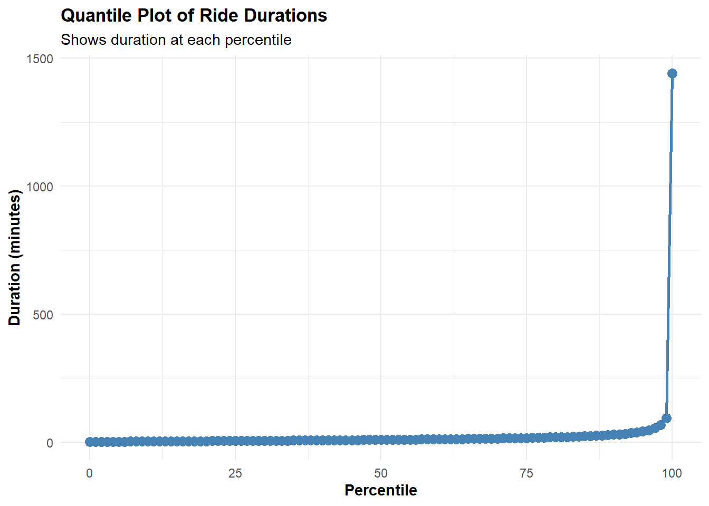
The lower and upper thresholds were plotted on the distribution graph to improve the visualization and understanding of potential outliers. This was done to support decision-making, as no additional input was available beyond the 24-hour and 60-second industry limits that had already been applied earlier.
# Shows our recommended cutoffs
# Create a dataset with cleaning thresholds
lower_bound <- 60 # 1 minute
upper_bound <- quantile(all_trips$ride_duration, 0.99) # 99th percentile
p2 <- ggplot(all_trips, aes(x = ride_duration/60)) +
geom_histogram(bins = 100, fill = main_color, color = "white", alpha = 0.6, position = "identity") +
geom_vline(xintercept = lower_bound/60, color = highlight_color, size = 1) +
geom_vline(xintercept = upper_bound/60, color = highlight_color, size = 1) +
scale_x_log10() +
scale_y_continuous(labels = scales::comma_format()) +
annotate("text", x = lower_bound/60, y = 0, label = "Lower Threshold",
color = highlight_color, angle = 90, vjust = -0.5, hjust = -0.1) +
annotate("text", x = upper_bound/60, y = 0, label = "Upper Threshold",
color = highlight_color, angle = 90, vjust = -0.5, hjust = -0.1) +
labs(title = "Distribution with Cleaning Thresholds",
subtitle = paste0("Lower: ", round(lower_bound/60, 1), " min | Upper: ", round(upper_bound/60, 1), " min"),
x = "Duration (minutes, log scale)",
y = "Count") +
theme_minimal() +
theme(plot.title = element_text(face = "bold"),
axis.title = element_text(face = "bold"))
print(p2)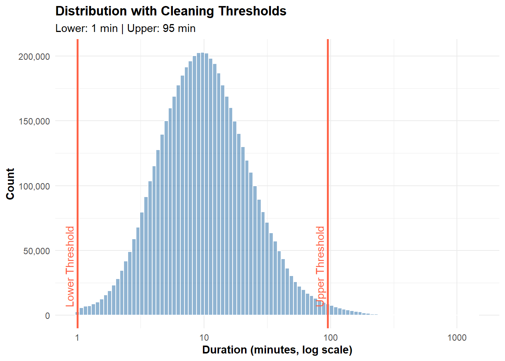
The initial visualization of ride duration with outlier thresholds looked acceptable. However, a second plot showing ride duration distribution by rider type (members vs. casuals) revealed that the upper threshold at the 99th percentile was too restrictive, especially for casual users. As a result, the upper limit was adjusted to the 99.80th percentile, while the lower threshold remained at 60 seconds. This adjustment provided a more accurate representation of typical ride durations across both user groups.
# Shows our recommended cutoffs
# Create a dataset with cleaning thresholds
lower_bound <- 60 # 1 minute
upper_bound <- quantile(all_trips$ride_duration, 0.99) # 99th percentile
p3 <- ggplot(all_trips, aes(x = ride_duration/60, fill = member_casual)) +
geom_histogram(bins = 100, color = "white", alpha = 0.6, position = "identity") +
geom_vline(xintercept = lower_bound/60, color = highlight_color, size = 1) +
geom_vline(xintercept = upper_bound/60, color = highlight_color, size = 1) +
scale_x_log10() +
scale_y_continuous(labels = scales::comma_format()) +
annotate("text", x = lower_bound/60, y = 0, label = "Lower Threshold",
color = highlight_color, angle = 90, vjust = -0.5, hjust = -0.1) +
annotate("text", x = upper_bound/60, y = 0, label = "Upper Threshold",
color = highlight_color, angle = 90, vjust = -0.5, hjust = -0.1) +
labs(title = "Distribution with Cleaning Thresholds",
subtitle = paste0("Lower: ", round(lower_bound/60, 1), " min | Upper: ", round(upper_bound/60, 1), " min"),
x = "Duration (minutes, log scale)",
y = "Count") +
theme_minimal() +
theme(plot.title = element_text(face = "bold"),
axis.title = element_text(face = "bold"),
legend.position = "bottom")
print(p3)The lower bound was set at 60 seconds, and the upper bound at approximately 194.8 minutes (based on the 99.80th percentile). This range better captures typical ride durations for both members and casual riders, while effectively excluding unrealistic outliers.
# Shows our recommended cutoffs
# Create a dataset with cleaning thresholds
lower_bound <- 60 # 1 minute
upper_bound <- quantile(all_trips$ride_duration, 0.9980) # 99th percentile
p4 <- ggplot(all_trips, aes(x = ride_duration/60, fill = member_casual)) +
geom_histogram(bins = 100, color = "white", alpha = 0.6, position = "identity") +
geom_vline(xintercept = lower_bound/60, color = highlight_color, size = 1) +
geom_vline(xintercept = upper_bound/60, color = highlight_color, size = 1) +
scale_x_log10() +
scale_y_continuous(labels = scales::comma_format()) +
annotate("text", x = lower_bound/60, y = 0, label = "Lower Threshold",
color = highlight_color, angle = 90, vjust = -0.5, hjust = -0.1) +
annotate("text", x = upper_bound/60, y = 0, label = "Upper Threshold",
color = highlight_color, angle = 90, vjust = -0.5, hjust = -0.1) +
labs(title = "Distribution with Cleaning Thresholds",
subtitle = paste0("Lower: ", round(lower_bound/60, 1), " min | Upper: ", round(upper_bound/60, 1), " min"),
x = "Duration (minutes, log scale)",
y = "Count") +
theme_minimal() +
theme(plot.title = element_text(face = "bold"),
axis.title = element_text(face = "bold"),
legend.position = "bottom")
print(p4)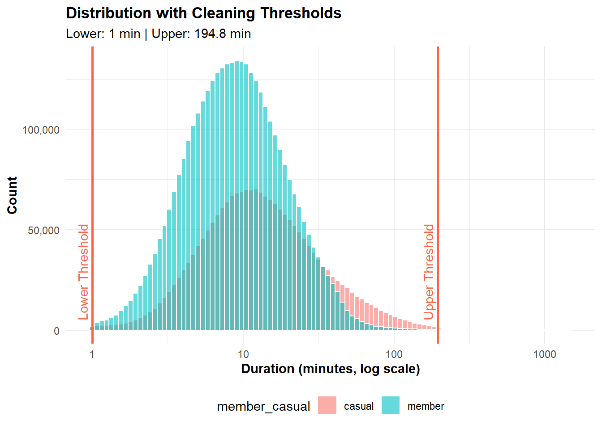
Rides longer than 194.8 minutes were added the extreme rides dataset for potential analysis then removed from the all_trips dataset, as they represent only 11,290 records out of a total of 5,643,748 (0.2%). This decision helps eliminate outliers and ensures the analysis focuses on typical ride durations.
# Identify rides that exceed the threshold (will be removed)
rides_to_remove <- all_trips[all_trips$ride_duration > 194.8*60]
# Add these rides to the existing extreme_rides dataset
extreme_rides <- rbind(extreme_rides, rides_to_remove)
# Now remove the extreme rides from all_trips
all_trips <- all_trips[ride_duration <= 194.8*60]Data transformation (day_of_week, hour_of_day, month, part_of_day, is_weekend)
Several new columns were added to enrich the dataset and support deeper analysis:
-day_of_week: day the ride started (e.g., Monday, Tuesday)
-hour_of_day: hour the ride began (0–23)
-month: month of the ride (e.g., January, February)
-part_of_day: time segment of the ride (e.g., morning, afternoon, evening, night)
-is_weekend: flag indicating whether the ride occurred on a weekend (TRUE/FALSE)
These features help analyze temporal patterns, user behavior, and ride characteristics more effectively.
(note: The total distance can indeed be calculated using the coordinates of the start and end stations, typically by calculating the straight-line (great-circle) distance between the two points. However, I’ve chosen not to rely on this measure for the analysis.
I believe that the total distance of the trip will not add much value to the analysis. Since bike trips are not necessarily linear, a rider could take a long route and still return to the same station, resulting in a calculated distance of zero. This would misrepresent the actual effort or nature of the trip.)
# This prepares the dataset with additional variables for analysis
all_trips[, `:=` (day_of_week =
factor(wday(started_at),
levels = 1:7,
labels = c("Sun", "Mon", "Tue", "Wed",
"Thu", "Fri", "Sat")),
hour_of_day = hour(started_at),
# Extract month as number, then convert to labels
month = factor(month(started_at),
levels = 1:12,
labels = c("Jan", "Feb", "Mar", "Apr", "May",
"Jun", "Jul", "Aug", "Sep", "Oct",
"Nov", "Dec")),
# Create weekend/weekday flag
is_weekend = if_else(wday(started_at) %in% c(1, 7),
"Weekend", "Weekday")
)]
# Group hours into parts of day
all_trips[, parts_ofday := case_when(
hour_of_day >= 5 & hour_of_day < 12 ~ "Morning",
hour_of_day >= 12 & hour_of_day < 17 ~ "Afternoon",
hour_of_day >= 17 & hour_of_day < 21 ~ "Evening",
TRUE ~ "Night"
)]Data transformation (Adding neighborhoods)
Two new columns, PRI_NEIGH (primary neighborhood) and SEC_NEIGH (secondary neighborhood), were added by mapping station coordinates to their corresponding neighborhoods. This enrichment enables geographic analysis of ride patterns across different areas of the city, even when station names are missing. Neighborhood information was added to the dataset using Neighborhoods_2012b.csv, which defines approximate neighborhood boundaries in Chicago, developed by the Office of Tourism.The data is also available on the Chicago Data Portal.
# Function to read and convert neighborhoods to spatial object
read_neighborhoods <- function(file_path) {
# Read the CSV
neighborhoods_df <- read_csv(file_path)
# Try to convert to spatial object
tryCatch({
neighborhoods_sf <- st_as_sf(neighborhoods_df, wkt = "the_geom", crs = 4326)
# Verify the spatial object
#cat("\nSpatial Object Information:\n")
#print(st_crs(neighborhoods_sf))
#print(st_geometry_type(neighborhoods_sf) |> table())
return(neighborhoods_sf)
}, error = function(e) {
cat("Error converting to spatial object:\n")
print(e)
stop(e)
})
}
# Function to process dataset with neighborhood labeling
process_bike_trips_neighborhoods <- function(trips_data, neighborhoods_sf) {
# Filter out records with missing coordinates
trips_clean <- trips_data[!is.na(start_lng) & !is.na(start_lat) &
!is.na(end_lng) & !is.na(end_lat)]
# Convert trips data to spatial points
trips_start <- st_as_sf(trips_clean,
coords = c("start_lng", "start_lat"),
crs = st_crs(neighborhoods_sf))
trips_end <- st_as_sf(trips_clean,
coords = c("end_lng", "end_lat"),
crs = st_crs(neighborhoods_sf))
# Spatial join for start neighborhoods
start_neighborhoods <- st_join(trips_start,
neighborhoods_sf[,c("PRI_NEIGH", "SEC_NEIGH")],
join = st_within)
# Spatial join for end neighborhoods
end_neighborhoods <- st_join(trips_end,
neighborhoods_sf[,c("PRI_NEIGH", "SEC_NEIGH")],
join = st_within)
# Combine results
result <- trips_clean[, `:=`
(start_primary_neighborhood = start_neighborhoods$PRI_NEIGH,
start_secondary_neighborhood = start_neighborhoods$SEC_NEIGH,
end_primary_neighborhood = end_neighborhoods$PRI_NEIGH,
end_secondary_neighborhood = end_neighborhoods$SEC_NEIGH)]
return(result)
}
# Main processing function
add_neighborhoods_to_trips <- function(trips_data, neighborhoods_sf) {
# Process neighborhoods
trips_with_neighborhoods <- process_bike_trips_neighborhoods(trips_data,
neighborhoods_sf)
# Summary statistics
#cat("Neighborhood Labeling Summary:\n")
#cat("Total records:", nrow(trips_with_neighborhoods), "\n\n")
# Neighborhood distribution
#cat("Start Primary Neighborhoods:\n")
#print(table(trips_with_neighborhoods$start_primary_neighborhood, useNA = "ifany"))
#cat("\nEnd Primary Neighborhoods:\n")
#print(table(trips_with_neighborhoods$end_primary_neighborhood, useNA = "ifany"))
# Calculate percentage of trips with assigned neighborhoods
start_neighborhood_coverage <- mean(!is.na(trips_with_neighborhoods$start_primary_neighborhood)) * 100
end_neighborhood_coverage <- mean(!is.na(trips_with_neighborhoods$end_primary_neighborhood)) * 100
cat(sprintf("\nNeighborhood Coverage:\n"))
cat(sprintf("Start Neighborhood Coverage: %.2f%%\n", start_neighborhood_coverage))
cat(sprintf("End Neighborhood Coverage: %.2f%%\n", end_neighborhood_coverage))
return(trips_with_neighborhoods)
}
# Workflow
# 1. Read neighborhoods
neighborhoods <- read_neighborhoods("C:\\Users\\aymen\\Desktop\\case_studies\\Case_study_1\\Neighborhoods_2012b.csv")Rows: 98 Columns: 5
── Column specification ────────────────────────────────────────────────────────
Delimiter: ","
chr (3): the_geom, PRI_NEIGH, SEC_NEIGH
dbl (2): SHAPE_AREA, SHAPE_LEN
ℹ Use `spec()` to retrieve the full column specification for this data.
ℹ Specify the column types or set `show_col_types = FALSE` to quiet this message.# 2. Add neighborhoods to trips
all_trips <- add_neighborhoods_to_trips(all_trips, neighborhoods)
Neighborhood Coverage:
Start Neighborhood Coverage: 98.52%
End Neighborhood Coverage: 98.49%From a total of 5,643,748 ride records, neighborhood labels were successfully assigned to the vast majority of trips:
Start Neighborhood Coverage: 98.52%
End Neighborhood Coverage: 98.48%
This high level of coverage demonstrates that, despite the absence of some station names (affecting ~27.95% of records), geographic context was effectively recovered through coordinate-based neighborhood mapping. As a result, nearly all trips can now be analyzed at a geographic level, enabling valuable insights into rider behavior and trends across different areas—even when exact stations were missing.
str(all_trips)Classes 'data.table' and 'data.frame': 5632258 obs. of 25 variables:
$ ride_id : chr "743252713F32516B" "BE90D33D2240C614" "D47BBDDE7C40DD61" "6684E760BF9EA9B5" ...
$ rideable_type : Factor w/ 3 levels "classic_bike",..: 1 2 1 1 2 1 2 2 1 1 ...
$ started_at : POSIXct, format: "2024-04-22 19:08:21" "2024-04-11 06:19:24" ...
$ ended_at : POSIXct, format: "2024-04-22 19:12:56" "2024-04-11 06:22:21" ...
$ start_station_name : chr "Aberdeen St & Jackson Blvd" "Aberdeen St & Jackson Blvd" "Sheridan Rd & Montrose Ave" "Aberdeen St & Jackson Blvd" ...
$ start_station_id : chr "13157" "13157" "TA1307000107" "13157" ...
$ end_station_name : chr "Desplaines St & Jackson Blvd" "Desplaines St & Jackson Blvd" "Ashland Ave & Belle Plaine Ave" "Desplaines St & Jackson Blvd" ...
$ end_station_id : chr "15539" "15539" "13249" "15539" ...
$ start_lat : num 41.9 41.9 42 41.9 42 ...
$ start_lng : num -87.7 -87.7 -87.7 -87.7 -87.7 ...
$ end_lat : num 41.9 41.9 42 41.9 41.9 ...
$ end_lng : num -87.6 -87.6 -87.7 -87.6 -87.6 ...
$ member_casual : Factor w/ 2 levels "casual","member": 2 2 2 2 2 2 2 2 2 2 ...
$ missing_start_stations_flag : num 0 0 0 0 0 0 0 0 0 0 ...
$ missing_end_stations_flag : num 0 0 0 0 0 0 0 0 0 0 ...
$ ride_duration : num 275 177 978 226 2242 ...
$ day_of_week : Factor w/ 7 levels "Sun","Mon","Tue",..: 2 5 7 5 6 4 4 5 3 7 ...
$ hour_of_day : int 19 6 11 18 19 16 7 18 20 15 ...
$ month : Factor w/ 12 levels "Jan","Feb","Mar",..: 4 4 4 4 4 4 4 4 4 4 ...
$ is_weekend : chr "Weekday" "Weekday" "Weekend" "Weekday" ...
$ parts_ofday : chr "Evening" "Morning" "Morning" "Evening" ...
$ start_primary_neighborhood : chr "West Loop" "West Loop" "Uptown" "West Loop" ...
$ start_secondary_neighborhood: chr "WEST LOOP" "WEST LOOP" "UPTOWN" "WEST LOOP" ...
$ end_primary_neighborhood : chr "West Loop" "West Loop" "Lake View" "West Loop" ...
$ end_secondary_neighborhood : chr "WEST LOOP" "WEST LOOP" "LAKE VIEW" "WEST LOOP" ...
- attr(*, ".internal.selfref")=<externalptr> Analysis:
1. User Distribution & Basic Metrics
The dataset shows that members account for 63.5% of total rides, while casual users make up 36.5%. On average, casual riders take longer trips (19.6 minutes) compared to members (11.9 minutes).
# Basic user type distribution
user_summary <- all_trips[, .(
total_rides = .N,
avg_duration = mean(ride_duration),
median_duration = median(ride_duration)
), by = member_casual
][, pct_of_total := total_rides / sum(total_rides) * 100]
# Prepare data for pie chart with formatted labels
pie_data <- user_summary[order(-member_casual)][, `:=`(
duration_mins = round(avg_duration / 60, 1),
ymax = cumsum(pct_of_total),
ymin = c(0, head(cumsum(pct_of_total), n=-1))
)][, `:=`(pos = (ymax + ymin) / 2,
label = paste0(str_to_title(member_casual), "\n",
percent(pct_of_total/100, accuracy = 0.1), "\n",
"Avg Duration: ", duration_mins, " min\n")
)]
# Create enhanced pie chart
p5 <- ggplot(pie_data, aes(x = "", y = pct_of_total, fill = member_casual)) +
geom_col(width = 1, color = "white", size = 2) +
coord_polar(theta = "y", start = 0) +
geom_text(aes(y = pos, label = label),
color = "white",
fontface = "bold",
size = 4.5,
lineheight = 0.8) +
scale_fill_manual(
values = c("casual" = "#4ECDC4", "member" = "#FF6B6B"), # Swapped colors to match
labels = c("Casual Users", "Members")
) +
labs(
title = "Bike Share Usage Distribution",
subtitle = "Percentage of Total Rides by User Type with Key Metrics",
caption = "Based on rides excluding duration outliers",
fill = "User Type"
) +
theme_void() +
theme(
plot.title = element_text(size = 16, hjust = 0.5, face = "bold"),
plot.subtitle = element_text(size = 12, hjust = 0.5, color = "gray60"),
plot.caption = element_text(size = 10, hjust = 0.5, color = "gray50"),
legend.position = "bottom",
legend.title = element_text(size = 12, face = "bold"),
legend.text = element_text(size = 11)
)
print(p5)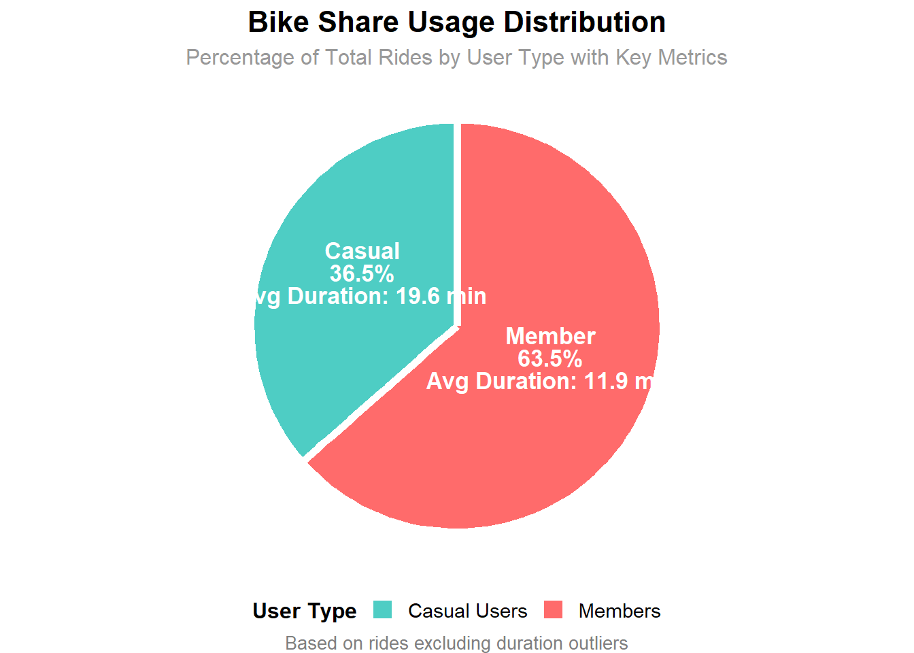
2. Temporal Usage Patterns
The hourly usage patterns reveal distinct behaviors between members and casual users. Members show sharp peaks during typical commute hours—around 8:00-9:00 AM and 5:00-6:00 PM—indicating regular use for work commutes. In contrast, casual users ride more steadily throughout the day, with a peak in the late afternoon, suggesting recreational or flexible usage. The heatmap further reinforces this, showing higher ride intensity for members during rush hours, while casual users peak later in the day, especially around 16:00-18:00.
#2.1 Hourly Usage Patterns
# Hourly usage comparison
hourly_usage <- all_trips[, .(ride_count = .N),
by = .(member_casual, hour_of_day)
][, pct_of_user_rides :=
ride_count / sum(ride_count) * 100,
by = member_casual]
# Line plot for overall comparison
p6 <- ggplot(hourly_usage, aes(x = hour_of_day, y = pct_of_user_rides,
color = member_casual, group = member_casual)) +
geom_line(size = 1.5, alpha = 0.8) +
geom_point(size = 3, alpha = 0.9) +
scale_color_manual(
values = c("casual" = "#FF6B6B", "member" = "#4ECDC4"),
labels = c("Casual Users", "Members")
) +
scale_x_continuous(breaks = seq(0, 23, 2), labels = paste0(seq(0, 23, 2), ":00")) +
labs(title = "Hourly Usage Patterns",
subtitle = "Commuting vs Recreation Patterns",
x = "Hour of Day", y = "% of User's Total Rides",
color = "User Type") +
theme_minimal() +
theme(
plot.title = element_text(size = 14, face = "bold"),
axis.text.x = element_text(angle = 45, hjust = 1),
legend.position = "bottom"
) +
annotate("rect", xmin = 7, xmax = 9, ymin = -Inf, ymax = Inf,
alpha = 0.1, fill = "blue") +
annotate("rect", xmin = 17, xmax = 19, ymin = -Inf, ymax = Inf,
alpha = 0.1, fill = "blue") +
annotate("text", x = 8, y = max(hourly_usage$pct_of_user_rides) * 0.9,
label = "Morning\nCommute", size = 3, color = "darkblue") +
annotate("text", x = 18, y = max(hourly_usage$pct_of_user_rides) * 0.9,
label = "Evening\nCommute", size = 3, color = "darkblue")
# Heatmap for detailed view
hourly_heatmap_data <- hourly_usage[, .(member_casual, hour_of_day, pct_of_user_rides)] |>
dcast(member_casual ~ hour_of_day, value.var = "pct_of_user_rides") |>
melt(id.vars = "member_casual", variable.name = "hour", value.name = "percentage")
hourly_heatmap_data[, hour := as.numeric(hour)]
p7 <- ggplot(hourly_heatmap_data, aes(x = hour, y = member_casual, fill = percentage)) +
geom_tile(color = "white", size = 0.5) +
scale_fill_gradient2(low = "white", mid = "#FFE5CC", high = "#FF8C42",
midpoint = mean(hourly_heatmap_data$percentage),
name = "% of Rides") +
scale_x_continuous(breaks = seq(0, 23, 2), labels = paste0(seq(0, 23, 2), ":00")) +
scale_y_discrete(labels = c("Casual Users", "Members")) +
labs(title = "Usage Intensity Heatmap",
x = "Hour of Day", y = "") +
theme_minimal() +
theme(
plot.title = element_text(size = 14, face = "bold"),
axis.text.x = element_text(angle = 45, hjust = 1),
axis.text.y = element_text(size = 12)
)
# Combine plots
(p6 / p7) + plot_layout(heights = c(2, 1))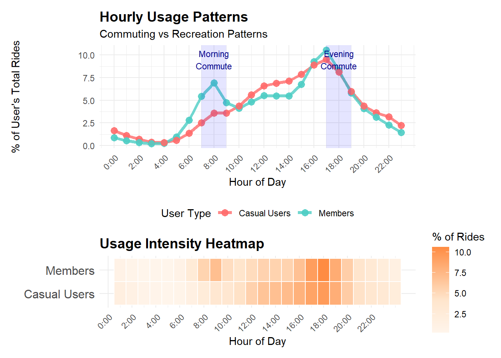
Casual users tend to ride more on weekends, especially on Saturdays (20.8%) and Sundays (16.9%), consistent with recreational usage. Meanwhile, members have a more even distribution throughout the workweek, with the highest activity on Wednesdays (16.2%), indicating regular commuting. This reinforces the insight that casual users are more active during leisure periods, while members use the service more routinely during weekdays.
#2.2 Daily Usage Patterns
# Daily usage patterns
daily_usage <- all_trips[, .(ride_count = .N) ,
by = .(member_casual, day_of_week)
][, pct_of_user_rides :=
ride_count / sum(ride_count) * 100,
by = member_casual]
# Weekend vs Weekday analysis
weekend_analysis <- all_trips[, .(
ride_count = .N,
avg_duration = mean(ride_duration)
), by = .(member_casual, is_weekend)
][, pct_rides := ride_count / sum(ride_count) * 100, by = member_casual]
# Enhanced daily patterns visualization
p8 <- ggplot(daily_usage, aes(x = day_of_week, y = pct_of_user_rides,
fill = member_casual, group = member_casual)) +
geom_col(position = "dodge", alpha = 0.8, width = 0.7) +
scale_fill_manual(
values = c("casual" = "#FF6B6B", "member" = "#4ECDC4"),
labels = c("Casual Users", "Members")
) +
labs(title = "Daily Usage Distribution",
subtitle = "Weekday vs Weekend Patterns",
x = "Day of Week", y = "% of User's Total Rides",
fill = "User Type") +
theme_minimal() +
theme(
plot.title = element_text(size = 14, face = "bold"),
legend.position = "bottom",
axis.text.x = element_text(size = 11)
) +
geom_hline(yintercept = 100/7, linetype = "dashed", alpha = 0.5, color = "gray50") +
annotate("text", x = 4, y = 100/7 + 1, label = "Equal Distribution Line",
size = 3, color = "gray50")
# Weekend impact analysis
p9 <- weekend_analysis %>%
select(member_casual, is_weekend, pct_rides) %>%
ggplot(aes(x = is_weekend, y = pct_rides, fill = member_casual)) +
geom_col(position = "dodge", alpha = 0.8, width = 0.6) +
scale_fill_manual(
values = c("casual" = "#FF6B6B", "member" = "#4ECDC4"),
labels = c("Casual Users", "Members")
) +
labs(title = "Weekend vs Weekday Usage",
x = "", y = "% of User's Total Rides",
fill = "User Type") +
theme_minimal() +
theme(
plot.title = element_text(size = 14, face = "bold"),
legend.position = "none"
) +
geom_text(aes(label = paste0(round(pct_rides, 1), "%")),
position = position_dodge(width = 0.6), vjust = -0.5, size = 4)
# Combine daily visualizations
(p8 | p9) + plot_layout(widths = c(2, 1))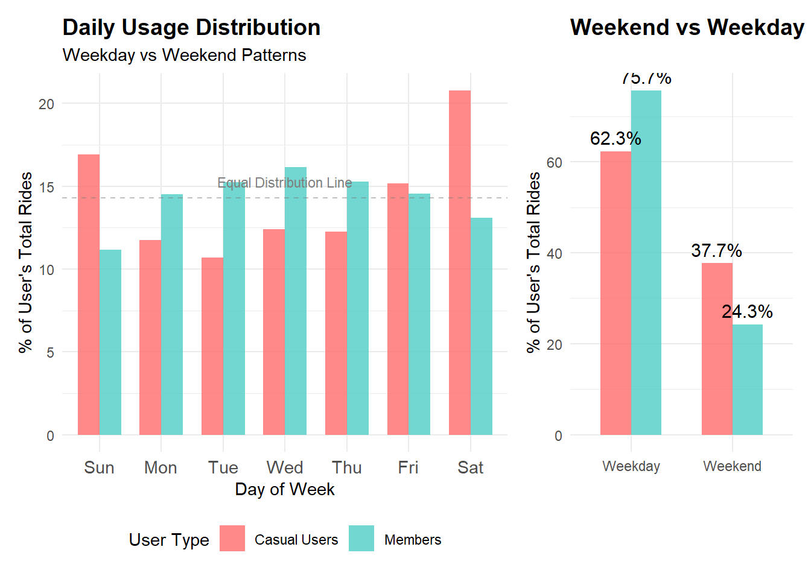
This seasonal chart highlights monthly ridership and trip duration trends. Casual users show a sharp increase in rides during warmer months (May–September), peaking in July and August, suggesting recreational use. Their trip durations are also much longer, especially in summer, reaching over 22 minutes on average. In contrast, members have more consistent usage throughout the year with shorter, steadier trip durations (around 12 minutes), reinforcing the pattern of regular, purpose-driven commuting.
#2.3 Monthly Patterns
# Seasonal usage patterns
monthly_usage <- all_trips[, .(
ride_count = .N,
avg_duration = mean(ride_duration)), by = .(member_casual, month)
][, pct_of_user_rides := ride_count / sum(ride_count) * 100, by = member_casual]
# Enhanced monthly visualization with dual metrics
p10 <- ggplot(monthly_usage, aes(x = month, group = member_casual)) +
# Ride count bars
geom_col(aes(y = pct_of_user_rides, fill = member_casual),
position = "dodge", alpha = 0.7, width = 0.8) +
# Duration line overlay
geom_line(aes(y = avg_duration/60 * 2, color = member_casual),
size = 1.2, alpha = 0.9) +
geom_point(aes(y = avg_duration/60 * 2, color = member_casual),
size = 3, alpha = 0.9) +
scale_fill_manual(
values = c("casual" = "#FF6B6B", "member" = "#4ECDC4"),
labels = c("Casual Users", "Members"),
name = "User Type"
) +
scale_color_manual(
values = c("casual" = "#CC0000", "member" = "#008B8B"),
labels = c("Casual Users", "Members"),
name = "User Type"
) +
# Dual y-axis setup
scale_y_continuous(
name = "% of User's Total Rides",
sec.axis = sec_axis(~ . / 2, name = "Average Duration (minutes)")
) +
labs(title = "Seasonal Usage Patterns",
subtitle = "Monthly Distribution and Average Trip Duration",
x = "Month",
caption = "Bars show ride distribution, lines show average duration") +
theme_minimal() +
theme(
plot.title = element_text(size = 14, face = "bold"),
legend.position = "bottom",
axis.text.x = element_text(angle = 45, hjust = 1),
axis.title.y.left = element_text(color = "black"),
axis.title.y.right = element_text(color = "darkred")
)
print(p10)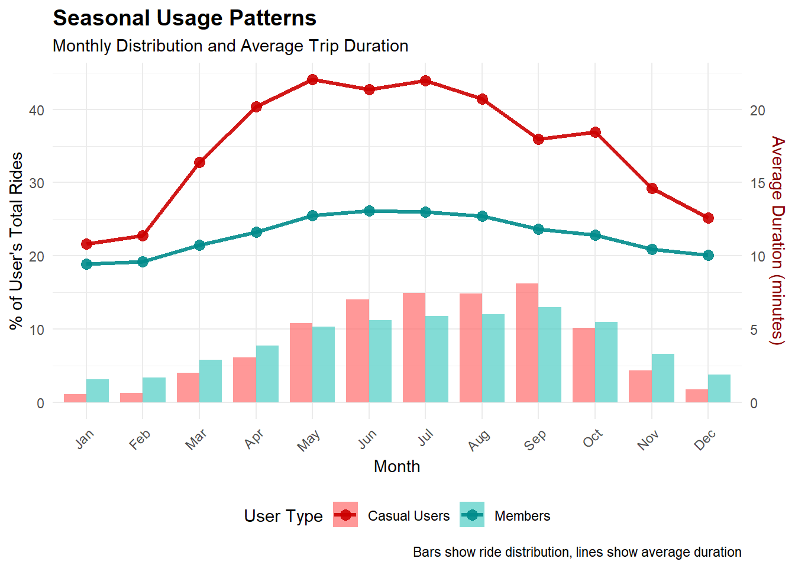
# Seasonal summary table
seasonal_summary <- monthly_usage[
, season := fcase(
month %in% c("Dec", "Jan", "Feb"), "Winter",
month %in% c("Mar", "Apr", "May"), "Spring",
month %in% c("Jun", "Jul", "Aug"), "Summer",
month %in% c("Sep", "Oct", "Nov"), "Fall"
)][
, .(total_pct = sum(pct_of_user_rides),
avg_duration_mins = mean(avg_duration) / 60),
by = .(member_casual, season)][
order(member_casual, match(season, c("Spring", "Summer",
"Fall", "Winter")))
]
seasonal_summary member_casual season total_pct avg_duration_mins
<fctr> <char> <num> <num>
1: casual Spring 21.012243 19.539527
2: casual Summer 43.925707 21.335293
3: casual Fall 30.799507 17.011741
4: casual Winter 4.262543 11.609523
5: member Spring 23.884281 11.718061
6: member Summer 35.029252 12.931490
7: member Fall 30.699735 11.237029
8: member Winter 10.386732 9.7055163. Trip Characteristics Analysis
This ride duration distribution graph shows that casual users tend to have longer trips than members do, suggesting recreational use.
#3.1 Duration Analysis
p11 <- ggplot(all_trips[ride_duration <= 11700],
aes(x = ride_duration/60, fill = member_casual)) +
geom_histogram(alpha = 0.7, bins = 60, position = "identity") +
scale_fill_manual(values = c("casual" = "#FF6B6B", "member" = "#4ECDC4")) +
labs(title = "Trip Duration Distribution",
x = "Duration (minutes)",
y = "Count") +
scale_x_log10(breaks = c(1, 10, 100, 1000)) +
theme_minimal()
print(p11)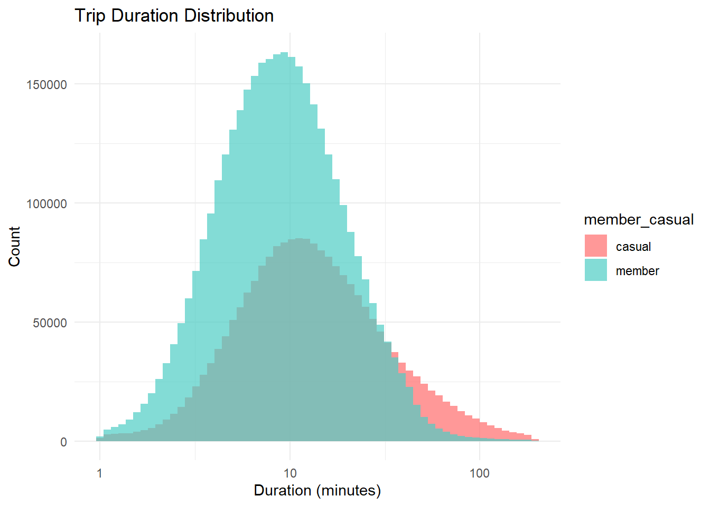
4. Bike Type Preferences
The graphs illustrate differences in bike type preferences and average trip durations between casual users and members. Both groups show a similar distribution in bike type preferences, with electric bikes being the most popular, followed by classic bikes, and electric scooters being the least used. However, when it comes to average trip duration, casual users consistently take longer rides across all bike types. The most notable gap is for classic bikes, where casual users ride for significantly longer durations than members. This suggests that casual users may be using the service for leisure or exploration, while members likely use it for quicker, more routine trips.
#5.1 Bike Type Usage
# Bike type preferences
bike_type_usage <- all_trips[
, .(ride_count = .N),
by = .(member_casual, rideable_type)
][,
pct_of_user_rides := ride_count / sum(ride_count) * 100 ,
by = member_casual]
# Bike type by trip characteristics
bike_trip_chars <- all_trips[
, .(avg_duration = mean(ride_duration),
avg_rides_per_hour = .N / n_distinct(paste(
date(started_at),
hour_of_day))),
by = .(member_casual, rideable_type)]
# 1. Simple stacked bar chart - Bike type usage percentage
p12 <- ggplot(bike_type_usage, aes(x = member_casual, y = pct_of_user_rides, fill = rideable_type)) +
geom_col() +
scale_fill_manual(values = c("classic_bike" = "#4ECDC4",
"electric_bike" = "#FFE66D",
"electric_scooter" = "#FF6B6B")) +
labs(title = "Bike Type Preferences by User Type",
x = "User Type",
y = "Percentage (%)",
fill = "Bike Type") +
theme_minimal()
# 2. Side-by-side comparison - Average duration by bike type
p13 <- ggplot(bike_trip_chars, aes(x = rideable_type, y = avg_duration/60, fill = member_casual)) +
geom_col(position = "dodge", alpha = 0.8) +
scale_fill_manual(values = c("casual" = "#FF6B6B", "member" = "#4ECDC4")) +
labs(title = "Average Trip Duration by Bike Type",
x = "Bike Type",
y = "Duration (minutes)",
fill = "User Type") +
theme_minimal()
(p12 | p13) + plot_layout(widths = c(2, 1))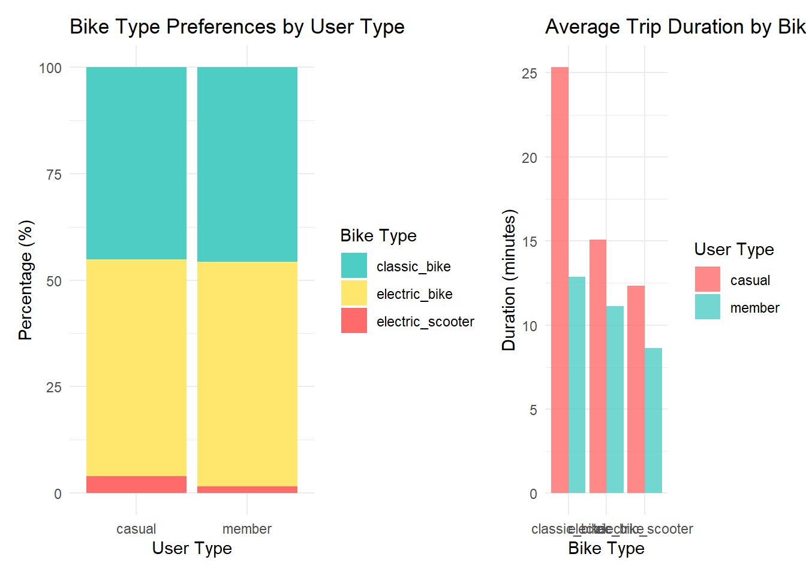
5. Map of bike stations and neighborhoods by station density
Unique stations were plotted on the Chicago map, and neighborhoods were analyzed by station density, taking into account each neighborhood’s area. This reveals which areas have higher or lower bike station coverage relative to their size.
# Convert stations to an sf object
stations_sf <- st_as_sf(all_station_records,
coords = c("lng", "lat"),
crs = st_crs(neighborhoods))
# Count stations per neighborhood
neighborhood_station_count <- stations_sf |>
st_join(neighborhoods) |>
group_by(PRI_NEIGH) |>
summarise(station_count = n())
# Merge station count with neighborhood geometries
neighborhoods_with_stations <- neighborhoods |>
left_join(as.data.frame(neighborhood_station_count), by = "PRI_NEIGH") |>
# Replace NA with 0
mutate(station_count = replace_na(station_count, 0)) |>
# Calculate area in square kilometers (SHAPE_AREA is likely in square meters)
mutate(area_sq_km = SHAPE_AREA / 1000000) |>
# Calculate station density (stations per square km)
mutate(station_density = station_count / area_sq_km)
# Create the density map
p14 <- ggplot() +
# Plot neighborhood polygons with fill based on station density
geom_sf(data = neighborhoods_with_stations,
aes(fill = station_density),
color = "white",
size = 0.1) +
# Add station points
geom_sf(data = stations_sf,
color = "red",
alpha = 0.5,
size = 1) +
# Customize the color scale
scale_fill_gradient(low = "lightblue", high = "darkblue",
name = "Stations per\nsquare km",
labels = scales::number_format(accuracy = 0.1)) +
# Add title and theme
labs(title = "Chicago Bike Share Station Density by Neighborhood",
subtitle = "Red points represent individual stations",
caption = "Data source: Bike Share Trip Dataset") +
theme_minimal() +
theme(
plot.title = element_text(hjust = 0.5, face = "bold"),
plot.subtitle = element_text(hjust = 0.5),
legend.position = "right"
)
print(p14)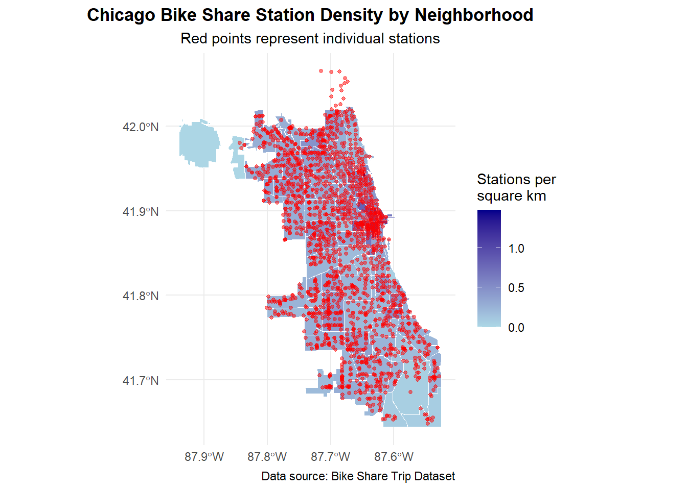
# Additional Analysis: Station Density
print("Neighborhoods with Highest Bike Share Station Density:")[1] "Neighborhoods with Highest Bike Share Station Density:"neighborhoods_with_stations |>
st_drop_geometry() |>
arrange(desc(station_density)) |>
select(PRI_NEIGH, station_count, area_sq_km, station_density) |>
head(10) |>
print()# A tibble: 10 × 4
PRI_NEIGH station_count area_sq_km station_density
<chr> <int> <dbl> <dbl>
1 Boystown 5 3.37 1.49
2 Rush & Division 4 3.49 1.15
3 Loop 33 31.5 1.05
4 Printers Row 2 2.16 0.925
5 River North 32 38.8 0.825
6 West Loop 36 52.9 0.680
7 Streeterville 12 17.9 0.671
8 East Village 4 7.05 0.567
9 Chinatown 6 10.6 0.565
10 Old Town 10 19.8 0.5046- Geographical analysis
This map shows the top 10 start stations for both user types, zoomed into central Chicago. Casual users concentrate along the lakefront and tourist areas like Streeterville and the Loop, while members cluster in business districts such as River North and West Loop. The geographic separation clearly reflects the recreational vs. commuter usage patterns, with casual riders preferring tourist destinations and members choosing stations near commercial areas that support daily commuting needs.
# Get top 10 START stations for each user type with neighborhood info
top_start_stations_by_user <- all_trips[
!is.na(start_station_name),
.(trip_count = .N),
by = .(member_casual, start_station_name, start_station_id, start_lat, start_lng, start_primary_neighborhood, start_secondary_neighborhood)
][
order(-trip_count),
head(.SD, 10),
by = member_casual]
# Convert to sf object for mapping
top_start_stations_sf <- st_as_sf(top_start_stations_by_user,
coords = c("start_lng", "start_lat"),
crs = 4326)
# Fix neighborhoods dataset
neighborhoods_clean <- neighborhoods |>
st_make_valid() |>
st_transform(4326)
# Calculate bounding box and add padding
bbox_start <- st_bbox(top_start_stations_sf)
padding <- 0.01
bbox_start[1] <- bbox_start[1] - padding
bbox_start[2] <- bbox_start[2] - padding
bbox_start[3] <- bbox_start[3] + padding
bbox_start[4] <- bbox_start[4] + padding
# Get top 3 stations for labels
top_start_stations_for_labels <- top_start_stations_sf |>
group_by(member_casual) |>
slice_max(trip_count, n = 3) |>
ungroup()
# Create START stations map with labels and neighborhood annotations
chicago_start_map <- ggplot() +
geom_sf(data = neighborhoods_clean,
fill = "lightgray",
color = "white",
size = 0.3,
alpha = 0.7) +
geom_sf(data = top_start_stations_sf,
aes(color = member_casual, size = trip_count),
alpha = 0.9) +
geom_sf_text(data = top_start_stations_for_labels,
aes(label = paste0(substr(start_station_name, 1, 15),
if_else(nchar(start_station_name) > 15, "...", ""))),
size = 2.2,
color = "black",
fontface = "bold",
nudge_y = 0.003,
check_overlap = TRUE) +
geom_sf_text(data = top_start_stations_for_labels,
aes(label = start_primary_neighborhood),
size = 1.8,
color = "darkblue",
style = "italic",
nudge_y = -0.003,
check_overlap = TRUE) +
scale_color_manual(values = c("casual" = "#FF6B6B", "member" = "#4ECDC4"),
name = "User Type",
labels = c("Casual", "Member")) +
scale_size_continuous(name = "Trip Count",
range = c(4, 10),
labels = scales::comma_format()) +
coord_sf(xlim = c(bbox_start[1], bbox_start[3]),
ylim = c(bbox_start[2], bbox_start[4]),
expand = FALSE) +
labs(title = "Top 10 Start Stations by User Type",
subtitle = "Chicago Bike Share System (Top 3 stations labeled with neighborhoods)") +
theme_minimal() +
theme(
plot.title = element_text(hjust = 0.5, face = "bold", size = 14),
plot.subtitle = element_text(hjust = 0.5, size = 11),
axis.text = element_blank(),
axis.ticks = element_blank(),
panel.grid = element_blank(),
legend.position = "bottom",
legend.box = "horizontal",
panel.background = element_rect(fill = "white", color = NA)
) +
xlab("") + ylab("")
print(chicago_start_map)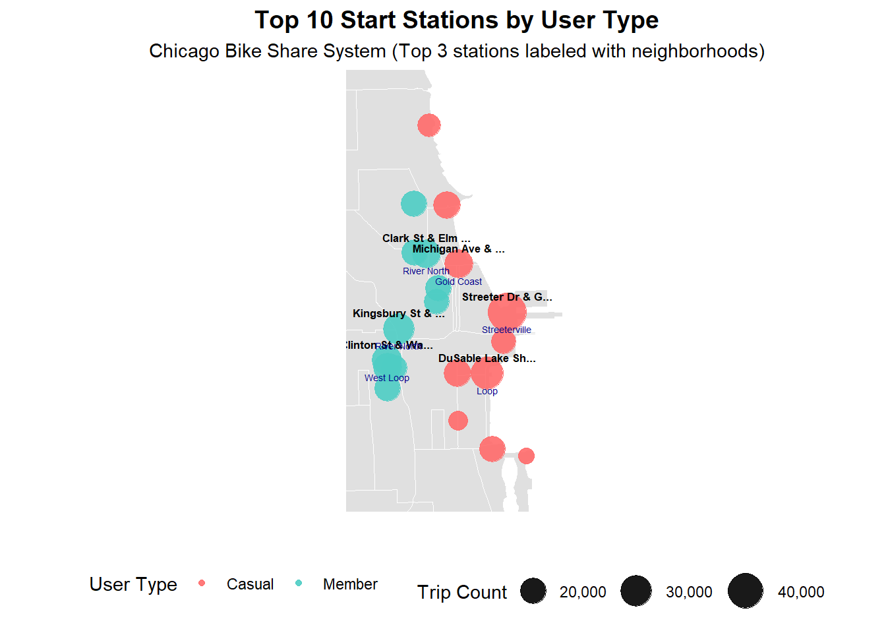
The end station patterns closely mirror the start stations, with casual users maintaining their concentration at tourist destinations and members at business district locations. This similarity likely reflects the high overall activity levels in these areas - popular neighborhoods for casual recreation and business commuting naturally become both frequent starting points and destinations for bike share trips.
# Get top 10 END stations for each user type with neighborhood info
top_end_stations_by_user <- all_trips[
!is.na(end_station_name),
.(trip_count = .N),
by = .(member_casual, end_station_name, end_station_id, end_lat, end_lng,
end_primary_neighborhood, end_secondary_neighborhood)
][
order(-trip_count),
head(.SD, 9),
by = member_casual
]
# Convert to sf object for mapping
top_end_stations_sf <- st_as_sf(top_end_stations_by_user,
coords = c("end_lng", "end_lat"),
crs = 4326)
# Calculate bounding box and add padding
bbox_end <- st_bbox(top_end_stations_sf)
bbox_end[1] <- bbox_end[1] - padding
bbox_end[2] <- bbox_end[2] - padding
bbox_end[3] <- bbox_end[3] + padding
bbox_end[4] <- bbox_end[4] + padding
# Get top 3 end stations for labels
top_end_stations_for_labels <- top_end_stations_sf |>
group_by(member_casual) |>
slice_max(trip_count, n = 3) |>
ungroup()
# Create END stations map with labels and neighborhood annotations
chicago_end_map <- ggplot() +
geom_sf(data = neighborhoods_clean,
fill = "lightgray",
color = "white",
size = 0.3,
alpha = 0.7) +
geom_sf(data = top_end_stations_sf,
aes(color = member_casual, size = trip_count),
alpha = 0.9) +
geom_sf_text(data = top_end_stations_for_labels,
aes(label = paste0(substr(end_station_name, 1, 15),
if_else(nchar(end_station_name) > 15, "...", ""))),
size = 2.2,
color = "black",
fontface = "bold",
nudge_y = 0.003,
check_overlap = TRUE) +
geom_sf_text(data = top_end_stations_for_labels,
aes(label = end_primary_neighborhood),
size = 1.8,
color = "darkblue",
style = "italic",
nudge_y = -0.003,
check_overlap = TRUE) +
scale_color_manual(values = c("casual" = "#FF6B6B", "member" = "#4ECDC4"),
name = "User Type",
labels = c("Casual", "Member")) +
scale_size_continuous(name = "Trip Count",
range = c(4, 9),
labels = scales::comma_format()) +
coord_sf(xlim = c(bbox_end[1], bbox_end[3]),
ylim = c(bbox_end[2], bbox_end[4]),
expand = FALSE) +
labs(title = "Top 10 End Stations by User Type",
subtitle = "Chicago Bike Share System (Top 3 stations labeled with neighborhoods)") +
theme_minimal() +
theme(
plot.title = element_text(hjust = 0.5, face = "bold", size = 14),
plot.subtitle = element_text(hjust = 0.5, size = 11),
axis.text = element_blank(),
axis.ticks = element_blank(),
panel.grid = element_blank(),
legend.position = "bottom",
legend.box = "horizontal",
panel.background = element_rect(fill = "white", color = NA)
) +
xlab("") + ylab("")
print(chicago_end_map)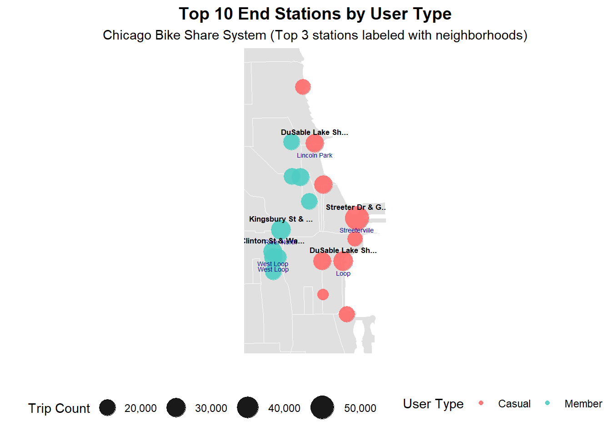
The bar chart reveals that casual users generate significantly higher trip volumes at their top stations compared to members, with Streeter Dr & Grand Ave alone accounting for nearly 50,000 trips. Member usage is more distributed across stations, reflecting their diverse commuting origins and destinations throughout the business districts.
# Prepare data for START stations bar plot with neighborhoods
start_plot_data <- top_start_stations_by_user[
order(member_casual, -trip_count)
][
, `:=`(
rank = seq_len(.N),
station_label = paste0(seq_len(.N), ". ", substr(start_station_name, 1, 25),
fifelse(nchar(start_station_name) > 25, "...", ""))
),
by = member_casual
][
, station_with_neighborhood := paste0(station_label, "\n(", start_primary_neighborhood, ")")
]
# Create START stations horizontal bar plot with neighborhood annotations
start_bar_plot <- ggplot(start_plot_data, aes(x = trip_count, y = reorder(station_with_neighborhood, trip_count))) +
geom_col(aes(fill = member_casual), alpha = 0.8) +
scale_fill_manual(values = c("casual" = "#FF6B6B", "member" = "#4ECDC4"),
name = "User Type",
labels = c("Casual", "Member")) +
scale_x_continuous(labels = scales::comma_format()) +
labs(title = "Top 10 Start Stations by Trip Count",
subtitle = "Station names with neighborhoods in parentheses",
x = "Number of Trips",
y = "") +
theme_minimal() +
theme(
plot.title = element_text(hjust = 0.5, face = "bold", size = 12),
plot.subtitle = element_text(hjust = 0.5, size = 10),
legend.position = "bottom",
axis.text.y = element_text(size = 7),
panel.grid.major.y = element_blank(),
panel.grid.minor = element_blank()
) +
facet_wrap(~member_casual, scales = "free", ncol = 1)
# Prepare data for END stations bar plot with neighborhoods
end_plot_data <- top_end_stations_by_user[
order(member_casual, -trip_count)
][
, `:=`(
rank = seq_len(.N),
station_label = paste0(seq_len(.N), ". ", substr(end_station_name, 1, 25),
fifelse(nchar(end_station_name) > 25, "...", ""))
),
by = member_casual
][
, station_with_neighborhood := paste0(station_label, "\n(", end_primary_neighborhood, ")")
]
# Create END stations horizontal bar plot with neighborhood annotations
end_bar_plot <- ggplot(end_plot_data, aes(x = trip_count, y = reorder(station_with_neighborhood, trip_count))) +
geom_col(aes(fill = member_casual), alpha = 0.8) +
scale_fill_manual(values = c("casual" = "#FF6B6B", "member" = "#4ECDC4"),
name = "User Type",
labels = c("Casual", "Member")) +
scale_x_continuous(labels = scales::comma_format()) +
labs(title = "Top 10 End Stations by Trip Count",
subtitle = "Station names with neighborhoods in parentheses",
x = "Number of Trips",
y = "") +
theme_minimal() +
theme(
plot.title = element_text(hjust = 0.5, face = "bold", size = 12),
plot.subtitle = element_text(hjust = 0.5, size = 10),
legend.position = "bottom",
axis.text.y = element_text(size = 7),
panel.grid.major.y = element_blank(),
panel.grid.minor = element_blank()
) +
facet_wrap(~member_casual, scales = "free", ncol = 1)
# Display bar plots side by side
combined_bar_plots <- grid.arrange(start_bar_plot, end_bar_plot, ncol = 2)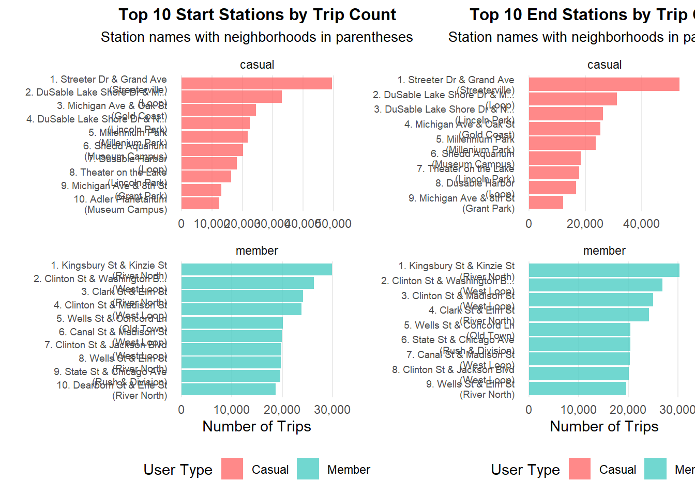
print(combined_bar_plots)TableGrob (1 x 2) "arrange": 2 grobs
z cells name grob
1 1 (1-1,1-1) arrange gtable[layout]
2 2 (1-1,2-2) arrange gtable[layout]Conclusion and Recommendations
Key Insights
The analysis reveals fundamental behavioral differences between casual riders and annual members that directly inform conversion strategies:
Casual Users are Recreational-Focused:
Take 65% longer trips on average, indicating leisure use rather than purposeful transportation
Show strong weekend preference (37.7% of rides on weekends vs. weekdays)
Concentrate at tourist attractions and lakefront locations
Peak usage during summer months when recreational activities are most appealing
Members are Commuter-Focused:
Consistent usage patterns aligned with work schedules (rush hour peaks, weekday preference)
Shorter, more efficient trips suggesting routine transportation needs
Station preferences in business districts (River North, West Loop)
Year-round usage stability indicating essential transportation dependence
Strategic Recommendations
1. Targeted Weekend Marketing Campaign
Since casual users are most active on weekends, launch weekend-specific promotional campaigns highlighting the convenience and cost savings of annual membership for regular weekend riders.
2. Seasonal Conversion Strategy
Capitalize on the summer peak (July-August) when casual usage is highest. Offer limited-time summer membership discounts or trial periods to capture users during their most active period.
3. Location-Based Interventions
At Tourist Stations: Install digital displays at high-traffic casual stations (Streeter Dr & Grand Ave, Millennium Park) showing membership benefits and cost comparisons
Commuter Route Promotion: For casual users who start using commuter-focused stations, trigger targeted offers highlighting commuting benefits
4. Usage Pattern Incentives
Create membership tiers or benefits that appeal to longer-ride preferences:
“Explorer Membership” with extended time allowances
Weekend bonus programs
Partnerships with tourist attractions for member discounts
5. Behavioral Nudging
Since casual users already demonstrate high engagement (longer rides, consistent weekend usage), they show strong service satisfaction. Target these engaged users with personalized conversion offers based on their usage frequency and patterns.
Expected Outcomes
Implementing these data-driven strategies should increase conversion rates by:
Targeting casual users during their peak engagement periods
Addressing their specific usage patterns and preferences
Leveraging their existing high satisfaction and engagement levels
Providing value propositions aligned with their recreational usage needs
The clear behavioral distinctions identified in this analysis provide a strong foundation for developing targeted marketing campaigns that speak directly to casual users’ motivations and usage patterns.